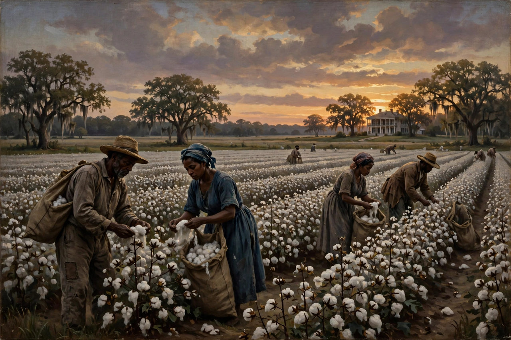

Slavery in the United States
| Slavery in the United States | |
|---|---|
| Period | 1619–1865 (in the territory of the present-day United States) |
| Enslaved population | Just under 4 million at the 1860 census |
| Legal abolition | Thirteenth Amendment (ratified December 6, 1865) |
| Key laws | Fugitive Slave Acts of 1793 and 1850; Missouri Compromise (1820); Kansas–Nebraska Act (1854) |

The legal institution of human chattel slavery, comprising the enslavement primarily of Africans and African Americans, was prevalent in the United States of America from its founding in 1776 until 1865, predominantly in the South. Slavery was established throughout European colonisation in the Americas, and from 1526 into the early modern period it formed the basis of the economic system of several colonies; by the time of American independence slavery was legal in all thirteen colonies. Under the law, an enslaved person was treated as property that could be bought, sold and disposed of at the will of the owner.
Origins and growth
The first enslaved Africans in mainland English America arrived at Point Comfort, Virginia, in 1619, brought by privateers from a Portuguese slave ship. Over the colonial period the institution hardened into a hereditary, race-based system as tobacco, rice and indigo cultivation spread. About 388,000 Africans were transported directly to mainland North America out of the roughly 12.5 million shipped across the Atlantic in the Middle Passage. Eli Whitney's cotton gin (1793) made short-staple cotton hugely profitable, and the "Cotton Kingdom" expanded across the Deep South; after Congress banned the importation of slaves in 1808, a vast domestic slave trade forcibly migrated about a million people from the Upper South to the cotton frontier. By 1860 the enslaved population approached four million, and the market value of enslaved people exceeded that of all the nation's railroads and factories combined.
Conditions, resistance and abolitionism
Enslaved people laboured under threat of violence, had no legal right to marriage, literacy or movement, and could be separated from family by sale at any time. Resistance ranged from work slowdowns and escape — via the Underground Railroad — to armed revolts such as those of Gabriel Prosser (1800), Denmark Vesey (1822) and Nat Turner (1831). The abolitionist movement, led by figures including William Lloyd Garrison, Frederick Douglass and Harriet Tubman, pressed the issue into national politics, while pro-slavery ideology increasingly defended the institution as a "positive good."
Civil War and emancipation
The election of Abraham Lincoln in 1860, on a platform of halting slavery's expansion, triggered the secession of eleven Southern states and the American Civil War (1861–1865). Lincoln's Emancipation Proclamation (1863) declared freedom for slaves in the rebellious states, and some 180,000 Black men served in the Union forces. Slavery was abolished nationwide by the Thirteenth Amendment, ratified in December 1865 — though its exception for punishment of crime later underpinned convict leasing. The Fourteenth and Fifteenth Amendments followed, granting citizenship and (male) suffrage, before Reconstruction collapsed and Jim Crow segregation was imposed across the South.
Legacy
Historians widely regard slavery as central to the economic development of the United States and to the racial inequalities that persisted long after abolition, through sharecropping, redlining and mass incarceration. Public memory of slavery — in museums such as the National Museum of African American History and Culture, in the 1619 Project debates, and in arguments over reparations — remains a live subject of American political argument.
See also: Atlantic slave trade · Emancipation Proclamation · Thirteenth Amendment